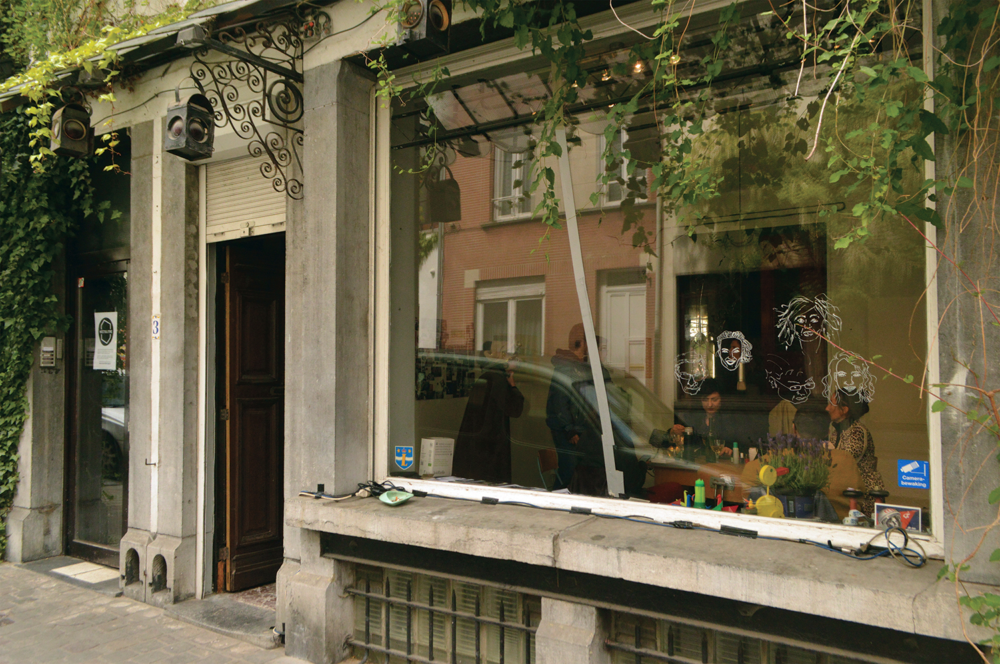
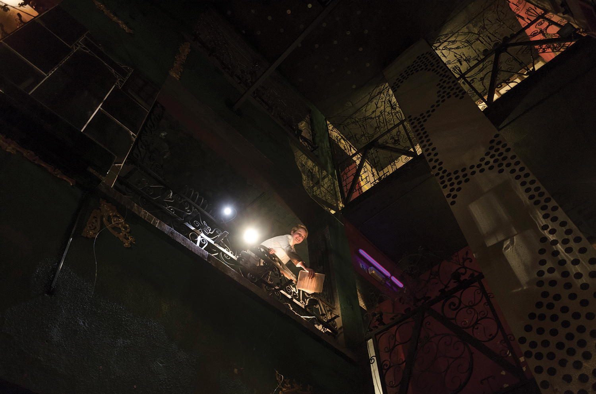
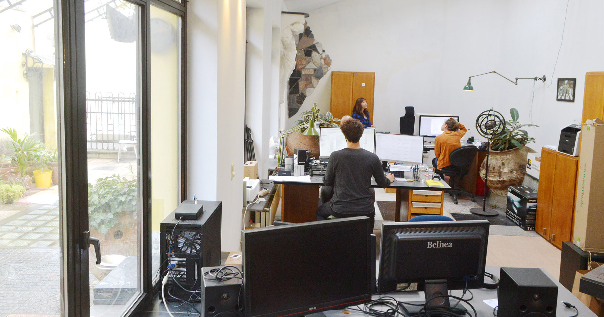
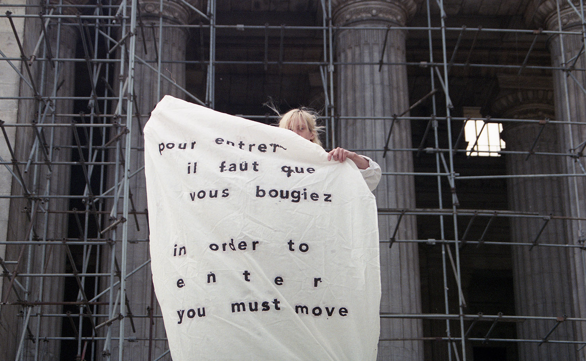

Il s’agit d’un ancien petit magasin de 20m2 avec une vitrine qui donne directement sur la rue. C’est le “trait d’union” qui connecte la dynamique artistique à l’œuvre dans l’immeuble (artistes en résidences notamment) et le voisinage. On peut y organiser un atelier, une projection vidéo, une réunion de quartier, animer une discussion autour d’un thé, présenter une pratique ou une coutume, installer une petite expo, partager à manger, ou tout à la fois. On y collecte des histoires et on crée des mémoires, on partage des compétences et des connaissances.
Présentation d’activités : mars 2019 - mars 2020

C'est l’espace central de l’ancien club échangiste. Un atrium intérieur, paysage vertical de deux étages, somme de toutes les fonctions du bâtiment au fil du temps et de tous les décors qui ont été intégrés à l’époque du club. Il y a une entrée propre, avec un desk d'accueil. Puis directement au rez-de-chaussée, on trouve le bar, une petite scène (avec barre de pole-dance), des toilettes et une piscine (vide). La zone au rez de chaussée est utilisée pour des événements publics ponctuels (performances, projections de films, conférences, débats, présentation de projets culturels, etc…) et pour des micro-résidences (en amont de certains événements).
Au sous-sol, il y a un studio audio pour enregistrer des podcasts et des voix off.
Dans les étages se trouve «Shared Atelier Partagé», il s’agit d’espaces de travail abordables pour les artistes membres de la communauté Hectolitre.
Image: performance by Pia Louwerens (a.pass end-communications); photo by Vijai Parchineelam
Work, live & more

Studio Hectolitre, c’est un des espaces du projet Hectolitre au même titre que le Trait-d’Union, l’Atelier Partagé ou le Réacteur. C’est un espace hybride en duplex autour d’une terrasse qui mélange lieu de vie et lieu de travail. Au 4e, les lieux de vies: 2 grandes chambres avec balcon et une petite chambre. Au 3e, les espaces de travail: un espace ouvert accueillant 8 workstations, une salle de réunion, une “Edit Room Vidéo”, une “Other Room” (zone de travail collaboratif) - et les espaces communs: une cuisine et un living partagé, un coffee corner et une grande terrasse.
Image: Jonathan Ortegat

Hectolitre hosts artistic residency programme which includes private living space and studio space. We have a capacity to host up to 7 artists for an independent research and site-specific initiative, adjusted for a 3 to 6 months residency.
The outcome is free of a specific form, and depending on the type of work and activities undertaken, it can come through a talk, performance, installation, screening, podcast, or web publication.
Image: Patricia Pi; Photo credits: Serena Vittorini